Self-initiated product · iOS, design and development
BloodLog
BloodLog helps you understand your bloodwork.
The idea for this app came to me because I wanted to understand my bloodwork results. I thought that I may not be the only one with that wish so I took on the project. The app allows users to take a picture or upload their analysis results. With the help of a trained AI with lots of health data and studies, the parameters are analyzed and the app explains in easy language what the whole picture shows along with some recommendations to improve.
- Role
- Everything — research, product, design system, SwiftUI, data layer, App Store submission.
- Why
- To stop briefing iOS engineers from the outside and learn what the constraints actually feel like.
- Platform
- iOS · SwiftUI · SwiftData · dark interface only.
- Status
- Live on the App Store. V2 approved July 2026.
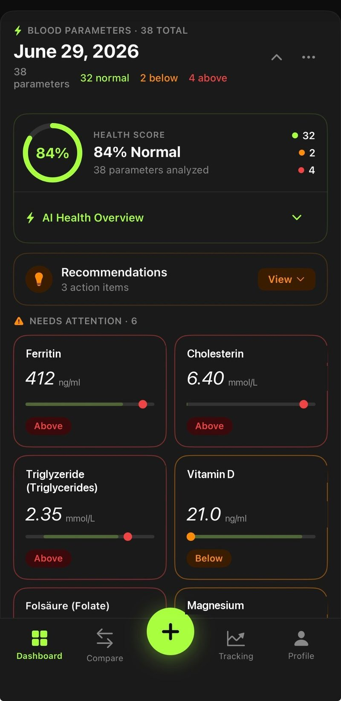
The information design problem
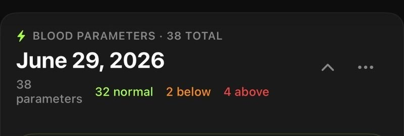
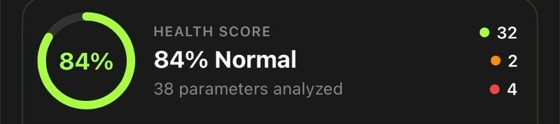
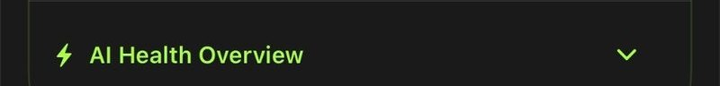
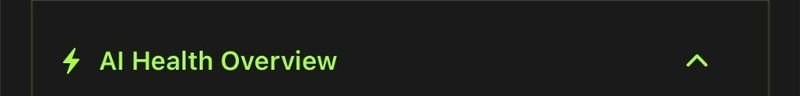
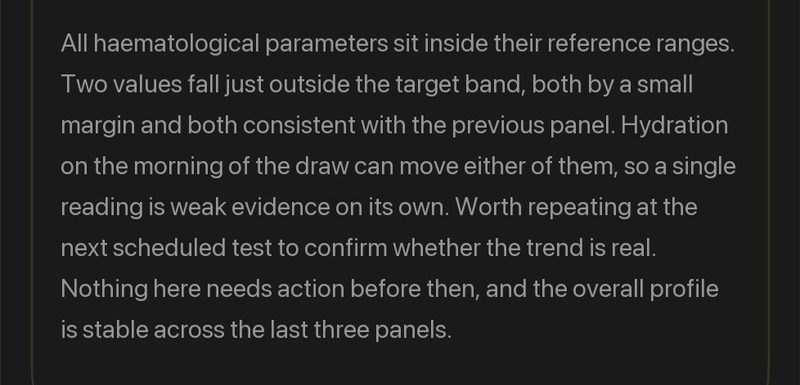
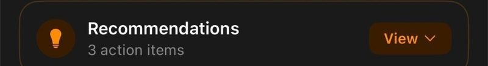
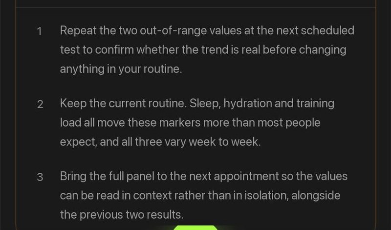
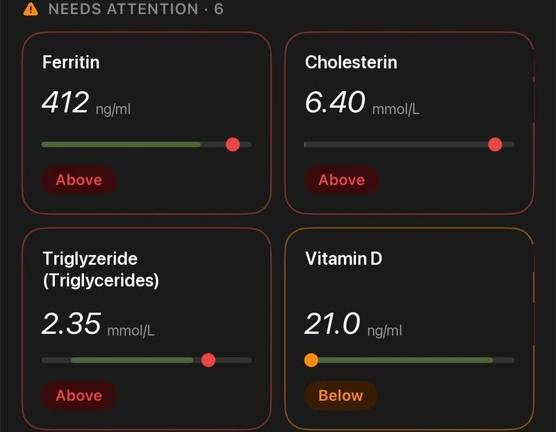
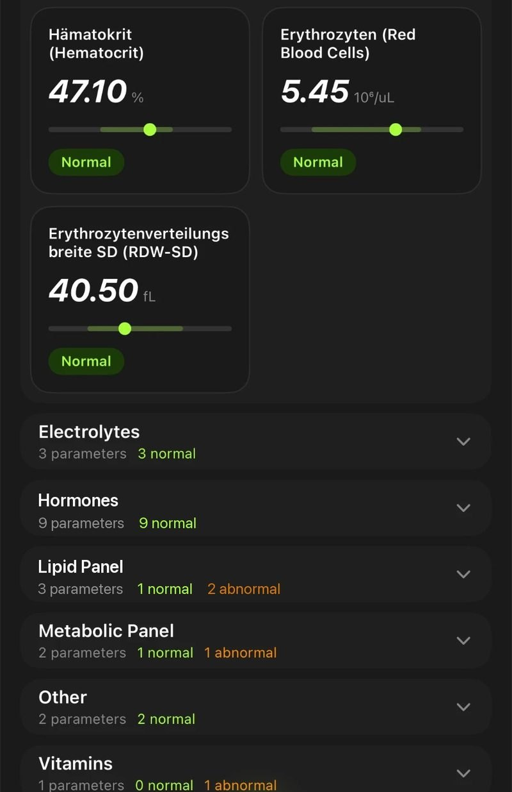
We all know how it is to go to the doctors after getting a blood panel done. He explains the things that stick out and thats it, hands you over a cryptic paper with some numbers and sends you home. Well BloodLog aims exactly there and helps you understand each and every parameter from your blood panel.
So the app has one job, and it is a hierarchy job. Out-of-range values come first, by name, with the distance from the range shown as a position on a bar rather than as a second number to hold in your head. Everything normal collapses into a category row you can open if you want it. A parameter you care about can be pinned and watched across tests.
The screenshots run on demo data. Real results stay on the device in SwiftData and are never uploaded anywhere I control — which is also why the paywall and the analysis backend had to be designed around a payload that carries values but no identity.
One parameter, explained
Tapping any value opens its own page, and this is the screen that justifies the app over the PDF. A lab report gives you a number and a range and leaves you to do the rest. This page answers the three questions that actually follow: where the value sits, whether it is moving, and what the thing being measured even is.
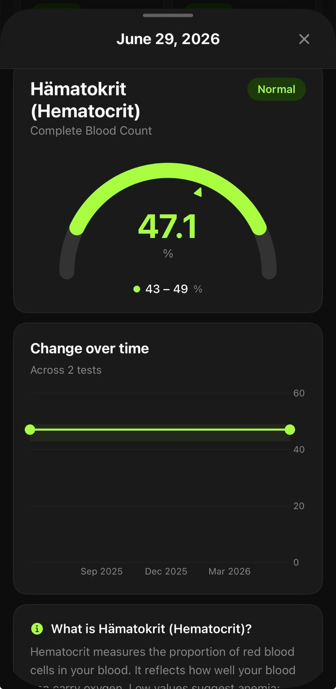
Where the value sits in its range
The gauge draws the reference range as an arc and puts the reading on it. "47.1" and "43 – 49" stop being two numbers you have to compare in your head and become one shape — the marker's position carries the answer before you have read either figure. The colour repeats the status, so the screen still works at a glance.
Whether it is moving
If the same parameter appears in an earlier test, the chart below plots it across all of them with the reference band behind the line. One test gives you a value; two give you a direction, which is usually the more useful of the two. When there is only a single measurement the chart is left out rather than drawn empty.
What the parameter actually is
Most people do not know what Hämatokrit measures, and a number you cannot interpret is not information. Every parameter carries a plain-language explanation of what it is and what high or low tends to indicate — served with the analysis, with a local dictionary of around sixty markers as the fallback so the page still reads offline or when the request fails.
A navigation decision worth naming. This page was originally a fullScreenCover with a back arrow, which reads as somewhere you have travelled to and must travel back from. Swapping it for a sheet with detents and a drag indicator made it a glance you dismiss — one swipe, no aiming at a target in the top-left corner. Same content, considerably less friction.
Following a value across tests
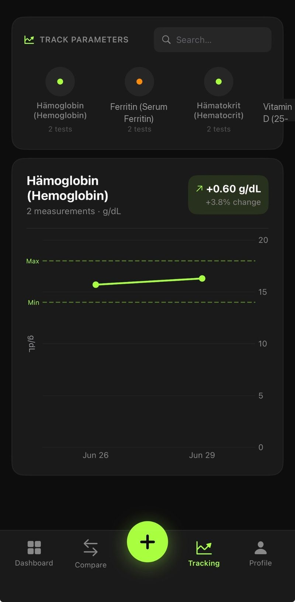
Pinned, not searched for
A marker worth watching gets pinned to its own tab. The chips carry the current status as a coloured dot and the number of tests it appears in, so the question stops being "what was my haemoglobin" and becomes "is it where it was". The reference minimum and maximum are dashed straight across the chart, which means a line drifting toward the edge is visible without reading a single axis label.
Two tests, side by side
Comparing any two tests returns a written briefing rather than a second table — what improved, what got worse, and what is worth raising at the next appointment. It arrives as Markdown and is rendered into headings, lists and tables. An early version printed the raw pipes and asterisks straight onto the screen, which is a good reminder that a working feature and a broken-looking one are separated by the parsing layer nobody budgets for.
How it is built
SwiftUI throughout, SwiftData for persistence, and a single theme file holding every colour, radius and type step so the V2 dark redesign was a token change rather than a repaint of each screen. Analysis runs on a small serverless endpoint; everything else, including the entire history, stays on the phone. StoreKit handles the subscription, with the first test free.
- One theme file, dark only
- Four tabs and a floating action button
- Charts drawn with Swift Charts
- Tests, parameters and ranges
- Soft delete behind the undo toast
- No account, no sync, no server copy
- Summary and recommendations
- Comparison briefing between tests
- Local descriptions as fallback